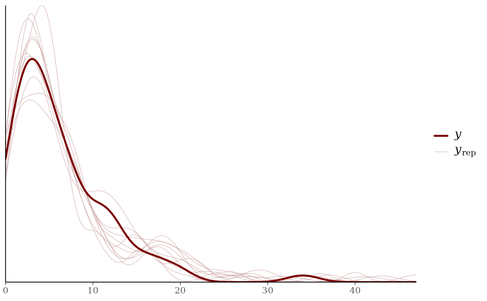
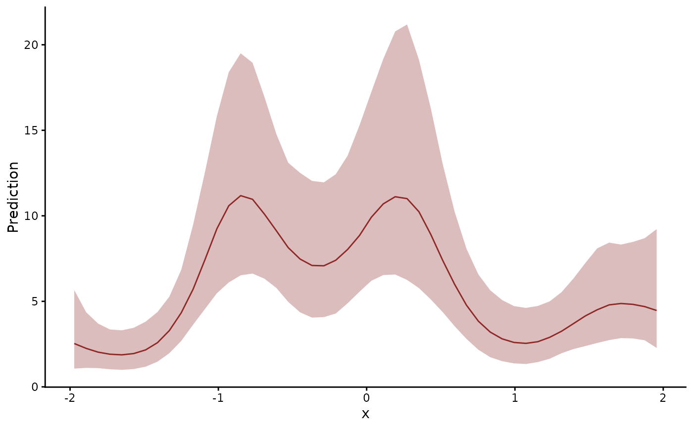
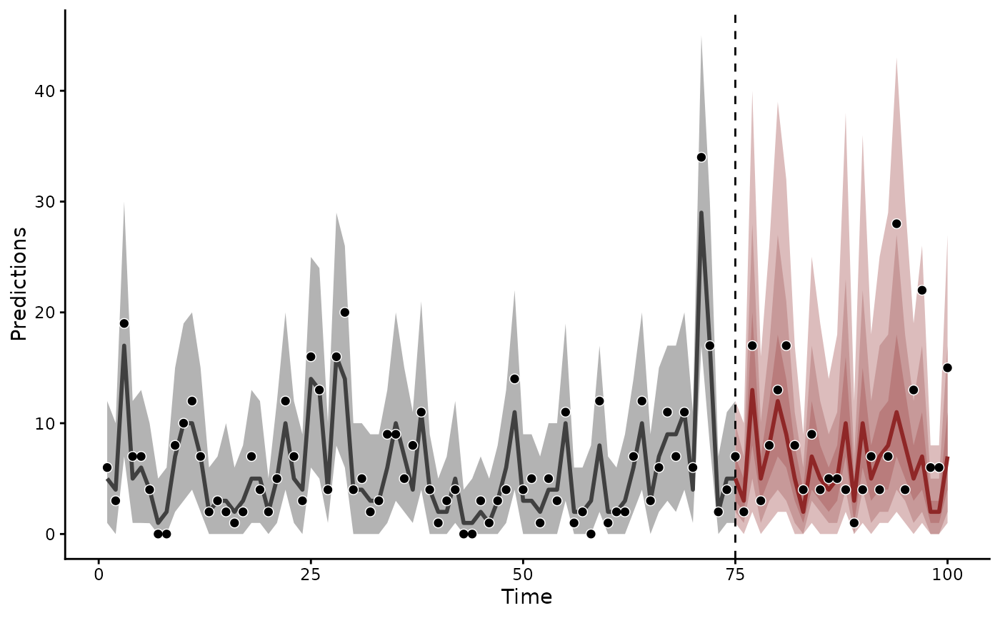

Fits the model in Stan. The observation formula takes brms syntax,
and trend_formula adds a latent dynamic process, such as a random
walk or an autoregression, with predictors of its own. A list of
multiply imputed data frames fits the model to each frame and pools
the draws.
Arguments
- formula
Main observation model formula (supports brms syntax). Smooth specials
s(),t2(),gp(), varying intercepts and slopes, monotonicmo(), measurement-errorme(), distributionaldparsub-formulas andoffset()are all available.gp()accepts both the approximate Hilbert-space form (gp(x, k = 20)) and the exact full-covariance form (gp(x), nok). Prediction atnewdatarequires the approximate form. An exactgp()term fits and scores in-sample.mvgam()says so once per session.- trend_formula
A one-sided formula for the latent process: a trend constructor such as
AR()with any predictors of the latent state. Writelv_axis()in a term to vary its effect by latent factor, or by series in a model without factors, as in~ x:lv_axis() + AR(). The series column itself is not supported in a term of this formula. An exactgp()term here also predicts in-sample alone. Forecasting a model that holds one requires the approximate form.- data
Data frame, or a list of multiply imputed data frames or a
midsobject from mice.mvgam_multiple()describes the imputation path.- newdata
Optional held-out
data.frame, stored on the fit asobject$test_data.forecast()forecasts to it when called withoutnewdata.plot(fit, type = "series")overlays it. The fit itself draws no forecasts.forecast()propagates the fitted latent state forward in time per posterior draw.posterior_predict(mod, newdata = mod$test_data)marginalises over the trend's stochastic dynamics at the supplied design points. Useforecast()for time-series forecasting andposterior_predict()for marginal predictive checks.- trend_map
Optional fixed factor loadings, in one of three forms:
a numeric
n_series x n_lvmatrix of loadings.NAentries are sampled. Finite entries stay fixed onZin the posterior. An all-NAmatrix fixes nothing and acts astrend_map = NULLa
data.frame(series, trend)assigning each series to one latent process"identity", one process per series, or"shared", one process for every series
A factor model without a
trend_mapsamples every loading. It identifiesZafter sampling by a thin QR rotation (Heaps and Jermyn 2024). Atrend_mapwith any fixed entry takes no rotation. The argument requires atrend_formula. It is an alternative to thetrend_mapargument of the trend constructor, and supplying both is an error.loadings_priorlists thetrend_mapforms a structured loadings prior accepts.- loadings_prior
Optional named list specifying a structured prior on the unconstrained factor loadings matrix following Heaps & Jermyn (2024). The loadings belong to a trend with latent factors. The argument requires a
trend_formula. Supplying it without one is an error. When supplied, the default iidto_vector(Z) ~ student_t(3, 0, 0.5)prior is replaced with a per-column matrix-normal prior of the formZ[, i] ~ multi_normal_cholesky(0, L_Phi), where the among-row scale matrixPhiis assembled multiplicatively from any combination of:a per-series feature matrix (
features), expanded into an ARD exponential kernel viagp_exponential_cov()one or more pairwise distance matrices (
distances), each contributing anexp(-d / theta)factor
Accepted fields:
features: string lookup intodata2, a numeric matrix, or a data.frame. Columns are encoded by type (numeric/integer/logical: z-score; ordered factor: z-score afteras.numeric(); unordered factor / character: one-hot with all levels retained, following Heaps Sect. 6.2). Each encoded column receives its own ARD length-scale.distances: string name (or character vector of names) of pairwise distance matrices indata2, or a single matrix / named list of matrices passed inline. Each matrix is rescaled to maximum entry one so the default length-scale prior is interpretable on a unit scale (matching Heaps Supps S4.2.1).column_shrinkage:"iid"(default; no shrinkage) or"mgp"(multiplicative-gamma-process increasing shrinkage of Bhattacharya & Dunson 2011, used in Heaps Eq. (9))."mgp"applies its column scale through the shared innovation scale. It is available forAR(),RW()andZMVN()trends.VAR()builds its own innovation covariance and has no shared scale for it; pair aVAR()factor model with"iid"instead.mgp_a1,mgp_a2: numeric MGP hyperparameters, only used whencolumn_shrinkage = "mgp". Default(2, 4)lies within thea2 in [3, 5]range recommended for moderate-n ecology / community panels by Legramanti, Durante and Dunson (2020, JRSS-B) and Schiavon, Canale and Dunson (2022, Biometrics 78:995). Heaps Sect. 6.3.1 used(2, 3)for the gas-demand application; Sect. 6.2.2 used(2, 6)for the Finnish-bird JSDM. Lowera2for less shrinkage when the data weakly identify the active rank.
Length-scales receive a
lognormal(0, 1)prior in the model block. This prior is set on the standardised distance scale. Pairwise distance matrices are rescaled tomax(d) = 1inside the normaliser. A length-scale of 1 then corresponds to correlationexp(-1)between the two most distant series. Heaps' Finnish-birds application (Sect. 6.2.2) used the widerlognormal(0, sqrt(10))instead; override the default by passing aprior()fortheta_features/theta_dist_<name>if your data weakly identify length-scales and you want less regularisation. Note: themax(d) = 1rule is the natural generic standardisation. Heaps Supps S4.2.1 used "root-to-tip distance = 1" for ultrametric phylogenies, which corresponds tomax(d) = 2(twice the per-leaf depth); pre-standardise your distance matrix to match if exact parity matters. Identification. The structured prior applies to the sampled columns ofZ. Where the QR rotation gives the reported loadingsZ_tilde, each of its columns mixes the sampled columns.shared_variation()andresidual_cor()useZ Z', which is the same before and after the rotation. See the Identification section of the trend constructors.Compatibility with
trend_map:trend_map = NULL(default): compatible.n_lvalone triggers the free-Z factor model;loadings_priorapplies to the sampledZcolumn-wise.trend_map = matrix(NA_real_, n_series, n_lv)(all-NA mask, used internally byjsdgam()): compatible. Treated as a free-Z trigger upstream;loadings_priorapplies as iftrend_mapwereNULL.trend_mapwith a mix of fixed entries andNAs: incompatible. Partial-Z parameterises the free entries as a vector under an iidstudent_t(3, 0, 1)prior, which would overlap with the matrix-normal structure and double-count regularisation.Fully-fixed
trend_map(noNAs): incompatible. The structured prior has no free parameters to act on.
- backend
"cmdstanr"or"rstan". Defaults togetOption("brms.backend", "cmdstanr").- combine
Logical. With imputed
data,TRUE(default) pools the imputation fits into one andFALSEreturns them as a list.- family
A description of the response distribution and link function, given as a family function, a call to one or its name. Supports most brms families, including the ordinal families (
brms::cumulative(),brms::sratio(),brms::cratio(),brms::acat()). The brms families needing a separate linear predictor per response category,brms::categorical(),brms::multinomial()andbrms::dirichlet(), are refused: usecateg(),multi()anddiri(), which take the categories in long format and share one latent structure across them. A family whose mean has to stay positive needs a link that keeps it there once a trend enters the linear predictor: pairstats::Gamma(),brms::weibull(),brms::exponential(),brms::frechet()andstats::inverse.gaussian()withlink = "log". Their default links leave the mean positive only where the predictor is. A latent trend is centred near zero and reaches negative values, where the likelihood is undefined.mvgam()warns before fitting.brms::lognormal()is the exception: itsmuis a log-scale location that takes any sign.A family written inside a univariate
brms::bf()is the model's family, as in brms. In a multivariate model each response may take its own family, in which case name it inside that response'sbrms::bf():bf(count ~ x, family = poisson()) + bf(seen ~ x, family = bernoulli()). Passing a list of families to this argument, asbrms::brm()allows, is not supported; the family belongs to the response that names it. A single family given here applies to every response that does not name one of its own. Closure-unit and multi-response families (occ(),nmix(),mvn(),mvt(),diri(),multi(),categ()) lay their data out by unit. Each models its response alone and cannot be one response of a multivariate model.- threads
Positive integer number of threads per chain, or
NULL(the default) for none. The model is compiled withcpp_options$stan_threads = TRUE. cmdstanr then samples withthreads_per_chain = threads. The closure-unit families (nmix(),occ()) and the multi-response families (diri(),mvn(),mvt(),multi(),categ()) split their likelihood over units withreduce_sum, in about eight chunks. With 50 or more closure units,threads = 4samples about a third faster. Fewer units can sample slower, the threading overhead outweighing the gain. A brms family without atrend_formulauses the threading brms writes.A brms-native family with a
trend_formulasamples serially whateverthreadssays. When it threads, brms moves themuassignment insidepartial_log_lik_lpmf, where mvgam cannot add the trend to it. The program is then built without threading. This applies to every trend model under a brms-native family:RW(),AR(),VAR(),LLT(),ZMVN(),CAR()andPW(). Each fit that drops the request warns. A batch script that fits repeatedly shows it every time.- save_pars
A
brms::save_pars()object naming which parameters the posterior keeps. A model is built from working variables it also reports under another name: the standardised deviates a group-level block is scaled from, the unscaled coefficients a shrinkage prior scales, the ordered intercepts a mixture is identified by. Those are left out by default, as brms leaves them out.save_pars(all = TRUE)keeps every one.groupandlatentkeep the per-level deviations and the latent values of ame()covariate.manualnames individual parameters to keep.- run_model
Logical.
FALSEbuilds the model without parsing, compiling or sampling it. The result holds$stancode,$standataand the prior table, with$fitset toNULL.stancode.mvgam_formula(),standata.mvgam_formula()andget_prior.mvgam_formula()return them. Methods that need draws, such assummary()andforecast(), refuse it. Ajsdgam()model has nomvgam_formula(), which makesrun_model = FALSEthe way to inspect one before fitting. Defaults toTRUE.- ...
Further arguments for the model and its sampler.
priortakes abrmspriorbuilt withbrms::prior(). Its rows replace the matching defaults.get_prior.mvgam_formula()lists every class a model takes, with trend classes carrying a_trendsuffix. The pluralpriorsis accepted as well.chains,iter,warmup,thin,seedandcontrolreach Stan as inbrms::brm().coressets how many chains sample at once. It defaults togetOption("mc.cores")when that option is set and otherwise to one fewer than the machine's cores, up tochains.algorithmselects how the posterior is explored. It accepts"sampling"(the default),"meanfield","fullrank"or"fixed_param"on either backend, plus"pathfinder"and"laplace"whenbackend = "cmdstanr".initsets the starting values. It accepts"random"(the default),"0", a numeric value, a list or a function. Withbackend = "cmdstanr"it also accepts"pathfinder". That keyword runs Stan's Pathfinder approximation on the compiled model and draws one starting value per chain from it. The requested algorithm still explores the posterior. The fit stays exact. It helps a model whose chains stall at a poor starting point or fill warmup with divergences. On a model that already warms up cleanly it adds about a second and lowers effective samples per second.Five arguments shape the Stan program and reach brms unchanged:
knotsgives knot positions by covariate name, for the observation and trend formulas alike.drop_unused_levelsdecides whether a factor level with no observations still takes a coefficient.sample_priortakes"no","yes"or"only". Under"only"the observation likelihood drops out and the latent process keeps its prior. The draws then show what the model implies before any response is observed.normalize = FALSEdrops the normalising constants from the sampling statements. Sampling is faster and the posterior is unchanged.save_modelnames a file to write the Stan program to.
References
Clark, N. J. and Wells, K. (2023). Dynamic Generalized Additive Models for forecasting discrete ecological time series. Methods in Ecology and Evolution, 14:771-784. doi:10.1111/2041-210X.13974
Burkner, P.-C. (2017). brms: An R package for Bayesian multilevel models using Stan. Journal of Statistical Software, 80(1):1-28. doi:10.18637/jss.v080.i01
Wood, S. N. (2017). Generalized Additive Models: An Introduction with R (2nd edition). Chapman and Hall/CRC.
Heaps, S. E. and Jermyn, I. H. (2024). Structured prior
distributions for the covariance matrix in latent factor
models. Statistics and Computing, 34:143.
doi:10.1007/s11222-024-10454-0
(post-hoc QR identification
of latent factor loadings; structured loadings_prior
construction.)
Riutort-Mayol, G., Burkner, P.-C., Andersen, M. R., Solin, A.
and Vehtari, A. (2023). Practical Hilbert space approximate
Bayesian Gaussian processes for probabilistic programming.
Statistics and Computing, 33:1.
doi:10.1007/s11222-022-10167-2
(used when formula
or trend_formula contains gp() terms.)
See also
trend_constructors lists the latent trends.
mvgam_families lists the observation families mvgam adds to
those of brms. how_to_cite() writes a methods paragraph for a
fitted model. methods_md() writes its equations. jsdgam() fits
joint species distribution models. The
overview vignette introduces
the package. The data vignette sets out
the data format. The
forecast evaluation article
scores and compares forecasts. The
multivariate formula article fits
several responses at once. The
integrated distribution model article
ties several observation families to one latent process.
Other model fitting:
check_newdata(),
jsdgam(),
mvgam_data(),
mvgam_formula(),
mvgam_multiple(),
pivot_detection_array(),
pivot_species_matrix(),
series_to_mvgam(),
stancode.mvgam_formula(),
update.mvgam()
Examples
# \dontrun{
# One count series with a smooth effect of a covariate x and an
# AR(1) latent trend, split into training and test times
set.seed(2)
simdat <- sim_mvgam(family = poisson(), n_timepoints = 100L,
trend_model = AR(), prop_trend = 0.5)
head(simdat$data_train)
#> y series time x
#> 1 6 series_1 1 -1.2604710
#> 2 3 series_1 2 0.8094961
#> 3 19 series_1 3 0.2933053
#> 4 7 series_1 4 -1.3277923
#> 5 7 series_1 5 1.7753574
#> 6 4 series_1 6 1.7738998
# The parameters a model takes, with their default priors, before
# any fitting. A `prior` argument to mvgam() replaces any of them
get_prior(
mvgam_formula(y ~ s(x), trend_formula = ~ AR(p = 1)),
data = simdat$data_train,
family = poisson()
)
#> prior class coef group resp dpar nlpar lb ub tag
#> student_t(3, 1.4, 2.5) Intercept
#> (flat) b
#> (flat) b sx_1
#> student_t(3, 0, 2.5) sds 0
#> student_t(3, 0, 2.5) sds s(x) 0
#> exponential(2) sigma_trend 0
#> normal(0, 0.5) ar1_trend -1 1
#> source
#> default
#> default
#> (vectorized)
#> default
#> (vectorized)
#> default
#> default
# A smooth of x in the observation model and an AR(1) latent trend.
# The test data are stored on the fit for forecasting
mod <- mvgam(
y ~ s(x),
trend_formula = ~ AR(p = 1),
data = simdat$data_train,
newdata = simdat$data_test,
family = poisson(),
chains = 2,
silent = 2
)
#> Warning: 21 of 2000 (1.0%) transitions ended with a divergence.
#> See https://mc-stan.org/misc/warnings for details.
summary(mod)
#> Family: poisson
#> Links: mu = log
#> Formula: y ~ s(x)
#> Data: simdat$data_train (Number of observations: 75)
#> Trends: AR(1)
#> Draws: 2 chains, each with iter = 2000; warmup = 1000; thin = 1;
#> total post-warmup draws = 2000
#>
#> == Observation Model ==
#> Smoothing Spline Hyperparameters:
#> Estimate Est.Error l-95% CI u-95% CI Rhat Bulk_ESS Tail_ESS
#> sds(sx_1) 9.68 4.02 2.87 19.38 1.00 232 216
#>
#> Regression Coefficients:
#> Estimate Est.Error l-95% CI u-95% CI Rhat Bulk_ESS Tail_ESS
#> Intercept 1.57 0.21 1.20 1.99 1.01 783 726
#> sx_1 -7.48 9.51 -26.65 10.01 1.00 377 822
#>
#> == Trend Model ==
#> Trend Specific Parameters:
#> Estimate Est.Error l-95% CI u-95% CI Rhat Bulk_ESS
#> sigma_trend[series_1] 0.37 0.09 0.22 0.57 1.00 381
#> ar1_trend[series_1] 0.69 0.15 0.34 0.93 1.00 300
#> Tail_ESS
#> sigma_trend[series_1] 690
#> ar1_trend[series_1] 579
#>
#> Draws were sampled using sampling(NUTS). For each parameter, Bulk_ESS
#> and Tail_ESS are effective sample size measures, and Rhat is the potential
#> scale reduction factor on split chains (at convergence, Rhat = 1).
#>
#> Next steps:
#> - `pp_check(fit)`: posterior predictive checks
#> - `forecast(fit, newdata = ...)`: out-of-sample forecasts
#> - `lfo_cv(fit)`: leave-future-out model comparison
#> - `conditional_effects(fit)`: covariate effects
#> Use `how_to_cite(fit)` for a methods paragraph and `methods_md(fit)` for its equations.
# Do draws from the model resemble the observed counts?
pp_check(mod)

# The effect of x on the expected count
conditional_effects(mod)

# Forecasts of the test times, with the held-out counts overlaid
plot(forecast(mod))

# A methods paragraph with its references
how_to_cite(mod)
#> Methods text skeleton
#> We used the R package mvgam (version 2.0.0; Clark & Wells, 2023) to
#> construct, fit and interrogate the model. mvgam fits Bayesian
#> state-space models that combine flexible predictor effects in both the
#> process and observation components, using functionality from the brms
#> (Burkner 2017) and mgcv (Wood 2017) packages. The mvgam-constructed
#> model and data were passed to Stan (Carpenter et al. 2017) via the
#> cmdstanr interface (Gabry et al. 2024). We ran 2 Hamiltonian Monte Carlo
#> chains for 1000 warmup iterations and 1000 sampling iterations.
#> Rank-normalised split Rhat and effective sample sizes (Vehtari et al.
#> 2021) were used to monitor convergence.
#>
#> Primary references
#> Burkner PC (2017). brms: An R Package for Bayesian Multilevel Models
#> Using Stan. Journal of Statistical Software, 80(1), 1-28.
#> https://doi.org/10.18637/jss.v080.i01
#> Carpenter B, Gelman A, Hoffman MD, Lee D, Goodrich B, Betancourt M,
#> Brubaker M, Guo J, Li P and Riddell A (2017). Stan: A probabilistic
#> programming language. Journal of Statistical Software, 76(1), 1-32.
#> https://doi.org/10.18637/jss.v076.i01
#> Clark NJ and Wells K (2023). Dynamic Generalized Additive Models (DGAMs)
#> for forecasting discrete ecological time series. Methods in Ecology and
#> Evolution, 14(3), 771-784. https://doi.org/10.1111/2041-210X.13974
#> Gabry J, Cesnovar R, Johnson A and Bronder S (2024). cmdstanr: R
#> Interface to 'CmdStan'. https://mc-stan.org/cmdstanr/
#> Vehtari A, Gelman A, Simpson D, Carpenter B and Burkner P (2021).
#> Rank-normalization, folding, and localization: An improved Rhat for
#> assessing convergence of MCMC. Bayesian Analysis, 16(2), 667-718.
#> https://doi.org/10.1214/20-BA1221
#> Wood SN (2017). Generalized Additive Models: An Introduction with R (2nd
#> edition). Chapman and Hall/CRC.
#>
#> Other useful references
#> Arel-Bundock V, Greifer N and Heiss A (2024). How to interpret
#> statistical models using marginaleffects for R and Python. Journal of
#> Statistical Software, 111(9), 1-32.
#> https://doi.org/10.18637/jss.v111.i09
#> Burkner PC, Gabry J and Vehtari A (2020). Approximate leave-future-out
#> cross-validation for Bayesian time series models. Journal of Statistical
#> Computation and Simulation, 90(14), 2499-2523.
#> https://doi.org/10.1080/00949655.2020.1783262
#> Gabry J, Simpson D, Vehtari A, Betancourt M and Gelman A (2019).
#> Visualization in Bayesian workflow. Journal of the Royal Statistical
#> Society: Series A (Statistics in Society), 182(2), 389-402.
#> https://doi.org/10.1111/rssa.12378
#> Vehtari A, Gelman A and Gabry J (2017). Practical Bayesian model
#> evaluation using leave-one-out cross-validation and WAIC. Statistics and
#> Computing, 27(5), 1413-1432. https://doi.org/10.1007/s11222-016-9696-4
#>
#> Use `bibtex(x)` for a BibTeX block ready for your .bib file.
# Next: a slope that drifts over time takes `s(time, by = x)` in the
# formula. loo() and lfo_cv() compare models. The articles under
# 'See Also' fit many series, factor models and VAR trends
# }